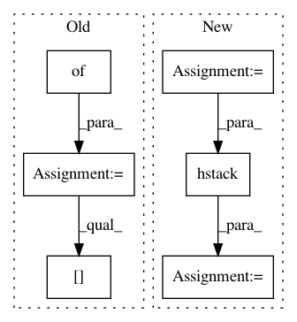

ae5602d3d008cc8b290b32e380fb72ae8fb53bd7,enso/metrics/basic_classification.py,RocAuc,evaluate,#RocAuc#Any#Any#,11
Before Change
def evaluate(self, ground_truth, result):
Return AUC metric.
classwise_auc = {}
binary_labels = labels_to_binary(ground_truth)
for column in result.columns.values:
classwise_auc[column] = roc_auc_score(binary_labels[column], result[column])
return classwise_auc
After Change
Return AUC metric.
binary_labels = labels_to_binary(ground_truth)
binary_labels = np.hstack([binary_labels[column].values.reshape(-1, 1) for column in result.columns])
predicted_labels = np.hstack([result[column].values.reshape(-1, 1) for column in result.columns])
return log_loss(binary_labels, predicted_labels)
In pattern: SUPERPATTERN
Frequency: 3
Non-data size: 6
Instances
Project Name: IndicoDataSolutions/Enso
Commit Name: ae5602d3d008cc8b290b32e380fb72ae8fb53bd7
Time: 2018-04-18
Author: madison@indico.io
File Name: enso/metrics/basic_classification.py
Class Name: RocAuc
Method Name: evaluate
Project Name: pyannote/pyannote-audio
Commit Name: aa7322f6057dce6424af3f2245e4c45bd33af05e
Time: 2017-01-11
Author: bredin@limsi.fr
File Name: scripts/speaker_embedding.py
Class Name:
Method Name: speaker_recognition_xp
Project Name: vc1492a/PyNomaly
Commit Name: 2526879b1f941c887eeb24a267b5ea010e20d5d7
Time: 2017-12-17
Author: vc1492a@gmail.com
File Name: PyNomaly/loop.py
Class Name: LocalOutlierProbability
Method Name: _ssd